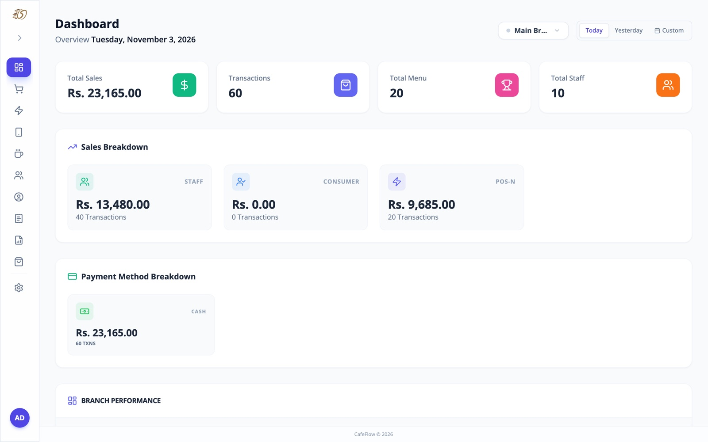
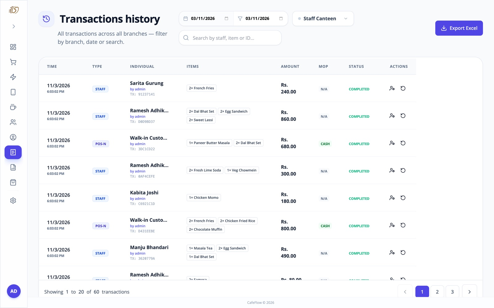
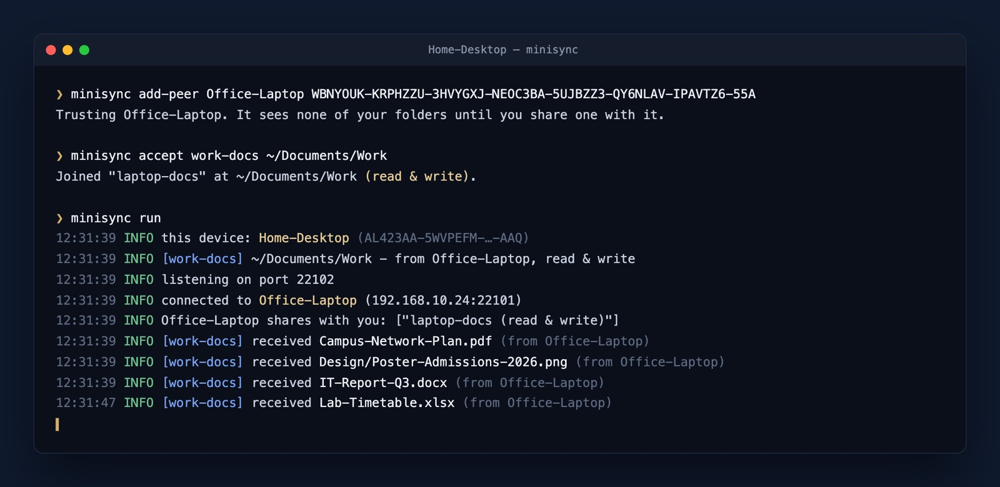

Graphic design
Logos, brand identities, posters, social media graphics and print materials that look polished and stay consistent.
IT Head · Assistant Lecturer · Designer · Consultant
I lead IT and teach at Boston International College. I build apps, AI agents and automations, create graphic design, run network infrastructure, and help organisations make the right technology decisions as a consultant.
I've been at Boston International College since 2021. As IT Head I look after the systems, services and people that keep a busy campus running. As an Assistant Lecturer I teach in the classroom, which keeps me honest about explaining technology in plain words.
My background is in business. I completed a BBA-BI and then an MBA, so I start every project by asking what problem the organisation needs solved. Since 2019 I've been building the digital side of that answer: apps, internal services, and lately AI agents and automations that handle repetitive work end to end.
I'm also a graphic designer, creating logos, brand identities, posters and social media visuals. Behind the scenes I plan and manage network infrastructure, and I consult for organisations that want their IT, networks and systems set up properly.
Logos, brand identities, posters, social media graphics and print materials that look polished and stay consistent.
Web apps and internal services built around real workflows, such as admissions, attendance, events and approvals. Fast to use and easy to maintain.
Assistants that read data, answer questions and take actions inside the tools people already use, with clear limits on what they can touch.
Repetitive steps such as reports, notifications, data syncing and form handling turned into workflows that run on their own.
Planning, setting up and managing networks, Wi-Fi, servers and security, so everything stays connected and fast.
Advice on infrastructure, systems and automation, from a first plan to a working setup, drawing on years of running IT for a college.
When I started, everything ran on one flat network. As the number of users grew, I redesigned it from the ground up: planned subnetting, separate VLANs so each group's traffic stays apart, IP telephony, and campus-wide Wi-Fi with more than 80 access points.
The result is a network that is faster, easier to troubleshoot, more secure, and ready to keep growing.
Wrote my first real projects and found that I liked building tools that save people time.
A business foundation that still shapes how I scope and prioritise technical work.
Took on the college's technology needs and started teaching alongside it.
Completed an MBA while working, adding strategy and management to the technical side.
Leading IT at the college, teaching, and building AI agents and automations for real operations.


Why I built it: our college canteens tracked staff allowances, student orders and cash sales on paper and spreadsheets. Month-end settlement took days, and nobody could see what was selling.
CafeFlow gives each branch a cashier terminal charged to staff allowances or cash, lets students pre-order from today's menu, prints kitchen tickets to network printers, and produces live sales reports and account statements.

Why I built it: I wanted my work folders on more than one computer without handing files to a cloud service or relying on a USB drive.
Mini Sync is a single small program for Windows and macOS. Pair two computers with their device IDs, share a folder, and every change is copied directly across the local network. There's no account and no server, and each shared folder can be read-only or read-write.
khana 250Food · Rs 250hijo bhada 15 hajarRent · Rs 15,000 · yesterdayतलब ५० हजारSalary · Rs 50,000Why I built it: expense apps don't understand how people in Nepal write about money, and they don't use the Bikram Sambat calendar. I wanted logging an expense to be as quick as typing a text message.
Type khana 250 or तलब ५० हजार and Hisab fills in the amount, category, account and date. It handles eSewa, Khalti, banks and credit cards, money lent and borrowed, monthly budgets and bank SMS import. Everything stays on the phone.
More recent projects, pulled live from GitHub.
Contact
Send me a short note about what you're working on. I usually reply within a day or two.